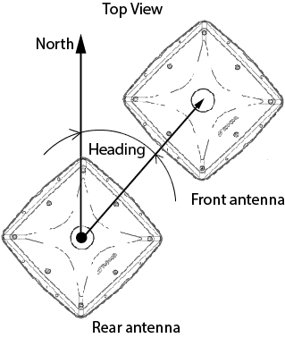
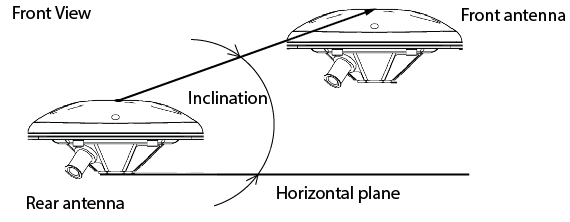

No heading is displayed if the receiver cannot compute it.
The Attitude tab displays the current heading and inclination computed by HD2 or VISOR engines.
Heading of dual antenna GNSS system – is an angle between the projection of the vector connecting phase centers of the two antennas to the horizontal plane, and the direction to the North.
|
 |
A value of current heading is displayed in the Heading field. The red end of the compass needle always points to the North, and the black one to the South. An angle between the red compass needle and green triangle in the upper part of the tab – current value of the heading, presented in a graphical form.
|
|
No heading is displayed if the receiver cannot compute it. |
Inclination of dual antenna GNSS system – is an angle between vector connecting phase centers of two antennas, and the projection of this vector to the horizontal plane.
|
 |
Current inclination value of GNSS system is indicated by green line with a triangle on its right end, on the Inclination scale panel on the right side of the window. The scale panel also displays a black horizon line, that corresponds zero inclination. Inclination value of GNSS system is displayed on the scale panel by major inclination marks at intervals of 20 degrees, and by minor inclination marks at intervals of 10 degrees.
|
|
No inclination is displayed if the receiver cannot compute it. |